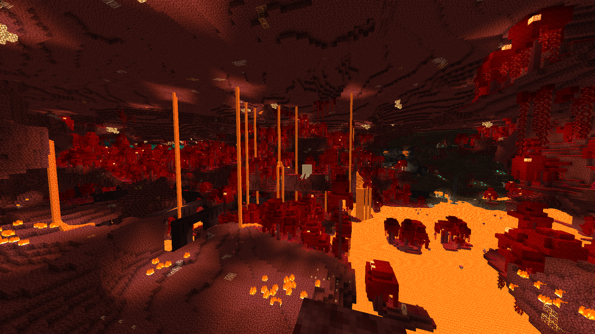
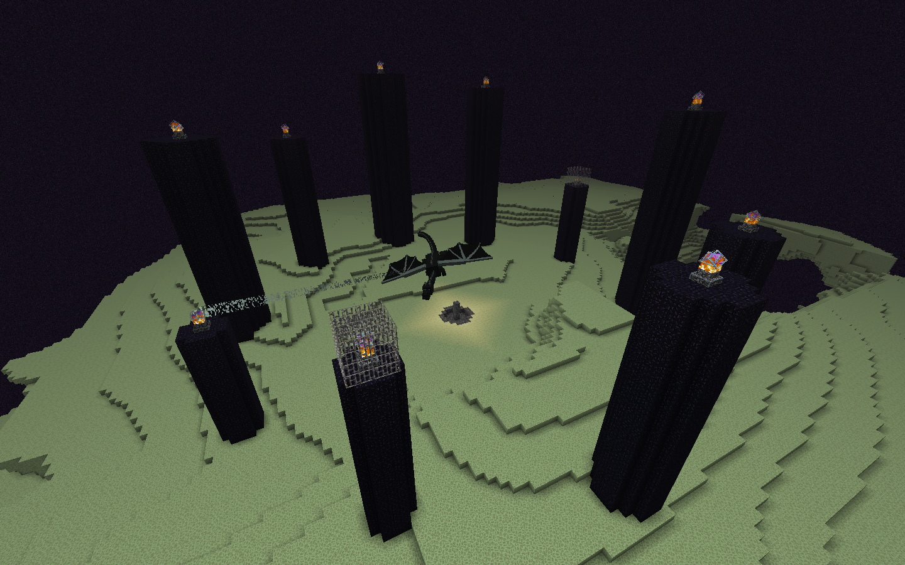

The overworld is the dimension that you begin the game in. This dimension resembles Earth, containing different biomes with animals, plants, water, and a sun and moon.
This is the "default" dimension and the dimension in which you are able to go to the two other dimensions.
The Nether is a dimension covered in lava and has unique mobs, such as the pigmen and blazes. The blazes are important for getting materials to go to The End.
Blazes drop blazepowder when killed which is used in making eyes of ender, which are used for getting to The End.
The Nether

The End

The End is the sort of final dimension of Minecraft. It's the most difficult dimension to get to and contains the end boss, The Ender Dragon.
To get to this dimension, you will need to craft eyes of ender. You then will use these to guide you to the End portal and will place them into the sockets of the End portal, igniting it.
When you enter the End, The Ender Dragon will automatically spawn. To kill it, you first need to break the end crystals ontop of each pillar to prevent it from healing.
After that, you will be able to kill The Ender Dragon by attacking it like any other mob.